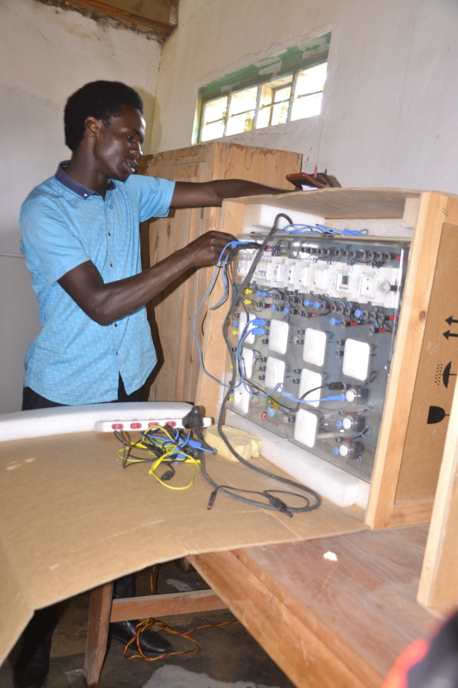
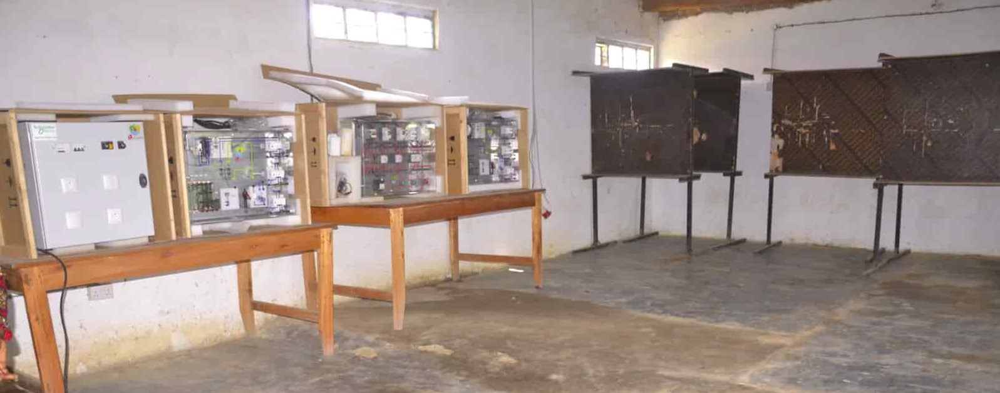

Ufundi Umeme
Jiunge na kozi yetu ya Ufundi Umeme ili ujenge umahiri wa kutosha katika ufungaji, utengenezwaji na matengenezo ya mifumo ya umeme kwa matumizi ya nyumbani, biashara na viwanda.
Jiunge SasaKwa Nini Chagua Kozi ya Ufundi Umeme?
Kozi iliyoandaliwa kwa vitendo na walimu wenye uzoefu, ikikupa maarifa na ujuzi unaotakiwa sokoni.

Miundombinu ya Kisasa
Chuo kina karakana na vifaa vya kutosha vinavyokusaidia kupima, kutengeneza na kufunga mifumo ya umeme kwa usahihi — ili ujifunze kwa vitendo na kujenga umahiri.

Wakufunzi Wabobezi
Wakufunzi wetu ni wataalamu waliohitimu na wenye uzoefu wa kazi za uhandisi wa umeme na ufungaji. Wanakufuatilia hatua kwa hatua kuhakikisha unapata ujuzi halisi.
Mafunzo ya Ujasiriamali
Mbali na ufundi, utapokea mafunzo ya jinsi ya kuanzisha na kuendesha biashara ya huduma za umeme, usimamizi wa mteja, na mbinu za uuzaji ili kujiendeleza kifedha.
Uunganishwaji na Makampuni (Practical Exposure)
Tuna mtandao wa makampuni na wataalamu ambao wanachangia kuandaa mafunzo ya vitendo (industrial attachment). Hii inakupa uzoefu muhimu kabla ya kuingia sokoni.
Mtaala / Moduli za Kozi
Kozi yetu inagawanywa katika moduli zinazokuruhusu kujenga ujuzi hatua kwa hatua kutoka msingi hadi kitaalamu.
Moduli 1: Misingi ya Umeme
Kanuni za msingi za umeme, voltage, current, ohm's law, na vifaa vya msingi.
Moduli 2: Teknika za Kufunga na Nyaya
Mbinu za kufunga nyaya, kuteka soketi, vifungo, mizunguko ya umeme nyumbani na kwa biashara ndogo.
Moduli 3: Ukarabati na Utambuzi wa Hitilafu
Uchunguzi wa matatizo, kutumia vyombo vya kupima (multimeter), na mbinu za kutatua kasoro za kawaida.
Moduli 4: Mifumo ya Umeme ya Viwanda na Usalama
Mifumo ya nguvu, sanaa ya usalama kazini, earthing, na kanuni za kuzuia ajali na hatari za umeme.
Moduli 5: Ujasiriamali kwa Mafundi Umeme
Jinsi ya kupanga biashara, huduma kwa wateja, kutafuta soko, bei, na usimamizi wa rasilimali.
Mafunzo ya Vitendo na Uzoefu wa Kazi
Tunakuweka karibu na mazingira ya kazi kupitia mazoezi ya karakana na ushirikiano na makampuni ya sekta ya umeme.
- Mazoezi ya Karakana: Wiki za mazoezi za vitendo katika karakana zetu zilizo na vifaa halisi.
- kuunganishwa na makampuni: Uunganishwaji na makampuni ya umeme kwa kipindi maalum cha mafunzo halisi.
- Mradi wa Mwisho: Kila mwanafunzi atakamilisha mradi wa vitendo unaothibitisha umahiri wake.
Mawasiliano
Kwa maswali kuhusu kozi, ada, au taratibu za udahili, wasiliana nasi moja kwa moja.
Ofisi ya Udahili - IVTC
📍 Mafinga-Iringa, Mkabala na Benki ya MUCOBA
📱 0754 271181 | 0717 435333
📧 incometvtc@gmail.com
Maswali ya Kozi
Ikiwa unahitaji orodha kamili ya mtaala, ada, au tarehe za kuanza, tuma barua pepe au tutembelea ofisi.
Muda wa kazi: Jumatatu - Ijumaa, 8:00AM - 4:00PM